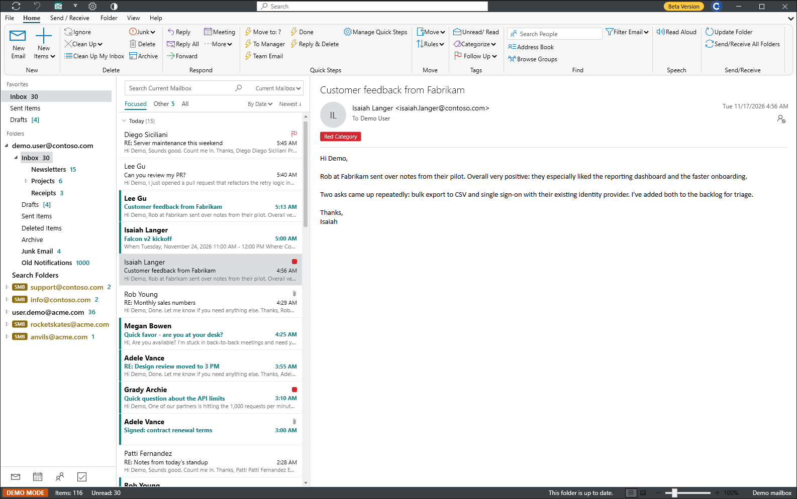
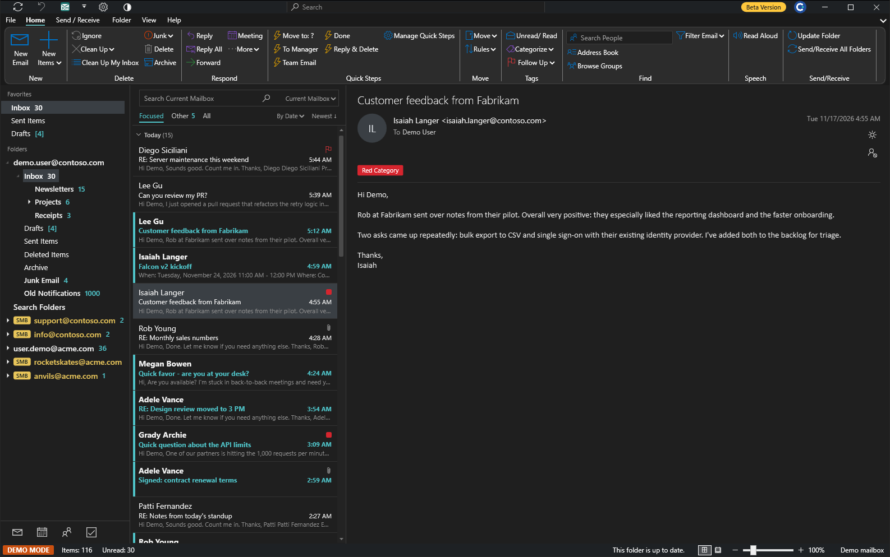

- The ribbon with Outlook’s tabs (File, Home, Send / Receive, Folder, View and Help) and the Quick Access Toolbar, with Undo.
- Tell me what you want to do (Alt+Q): type part of a command’s name and run it.
- The folder pane with Favorites, unread counts, folders in your own order, and Normal, Minimized or Off.
- The message list and reading pane, with the reading pane on the right, at the bottom or off, and Reading view.




- Folders, many at once: pick several with Ctrl or Shift, then move, delete or Move to Spam them together; cut and paste folders with Ctrl+X and Ctrl+V, and delete with the Delete key. Empty Folder, Delete All, Clean Up, Mark All as Read and Properties, as on Outlook’s folder menu.
- The To-Do Bar with the month calendar, upcoming appointments and flagged mail.
- Outlook’s keyboard shortcuts, Ctrl+1 to Ctrl+4 between Mail, Calendar, People and Tasks, and F1 for help on what’s on screen.
- Outlook’s right-click menus on messages, folders, names, calendar items, contacts and tasks.
- Dialogs from the keyboard: arrow keys move between the buttons and choices, and Space or Enter picks one. In File → Options the arrow keys move through the sections and Tab goes into one; in the message list, Left folds the date group you leave and Right opens the next.
- Windows that remember where they were and how big, on whichever monitor.
- Open in New Window: a second main window, so Calendar can stay open beside Mail.
- Start with Windows, minimized if you like, and Start in this folder: the folder InCloseMail opens on, as in Outlook (File → Options → General).
- A Welcome wizard after your first account: theme, how much mail to keep on your PC (up to 20 years, or all of it), starting with Windows, whether InCloseMail may change your mailbox, the reading pane, and the default email app.
Missing something you used in Outlook? Choose Help → Suggest a Feature in the app. Found a bug? Choose Help → Report a Bug.